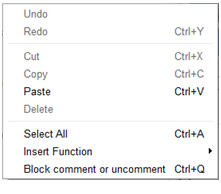

Script editor panel¶
What is the Script editor panel¶
The Script editor panel enables to edit box scripts.

This editor integrates syntax highlighting to ease the edition.
At the bottom of the panel you can see the number of the selected line on the left and a field to search a specific keyword in the script.
How to open the script of a specific box¶
In the flow diagram, to open the script of any box, right-click on it and select Edit box script.
The script is displayed in the Script editor panel.
Note
For a Python box you can also double-click on it.
Script editor panel functionalities¶
Script editor functions¶
If you right-click in the panel, the following menu is displayed:
This contextual menu provides fast access to some classic functions for a script editor:
- Undo: to revert last script modification.
- Redo: to apply previously reverted modification.
- Cut, Copy, Paste or Delete: to cut, copy, delete selected text block or paste text at the current location of editing cursor.
- Select All: to select the complete script.
- Insert Function: to insert a built-in function only available from a box script.
- Block comment or uncomment: to toggle the current line or the selected text block commented or uncommented.
Search functions¶
You have useful functions at the bottom of the panel:
Search text field to find a specific keyword in the current script:

It is highlighted in red if the keyword is not found in the script:

Navigation buttons to move to the previous or the next matching string:

Note
By default, the search wraps around the document: if you reach the bottom of the the script, it will start again from the top. This option can be disabled from the Setting button.
Setting button to specify search options:
- Match case
- Match whole word
- Wrap around

Customizing Script editor panel¶
Several options are available in order to customize the Script editor panel:
- Display mono-spaced font,
- Display code folding buttons,
- Display line numbers,
- Wrap text.
For further details, see: Choregraphe Preferences.